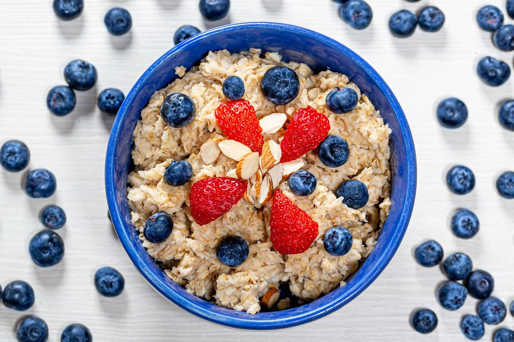

Oatmeal recipe

Description
Oatmeal is a very health dish made usually in the morning for breakfast.
It is relatively easy to prepare and will keep you fulfilled for a good
amount of time. Usually it is prepared by mixing it with milk in a pan and
heating it for a short while. Additionally, you can add several types of
fruit and nuts to as well.
Ingredients
- Oatmeal
- Milk
- Blueberries
- Almonds
Steps
- Add a couple spoons of oatmeal to a pan
- Pour some milk until the oatmeal is drenched slightly
- Put the pan on a low fire
- Slice some fruits and them to the pan
- Add the almonds at last
- After 2-3 minutes you can empty the oatmeal onto a plate
- Enjoy!